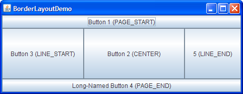
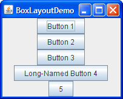
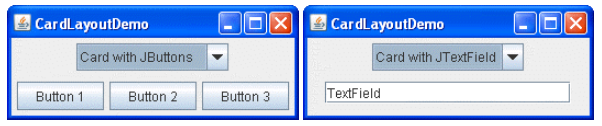
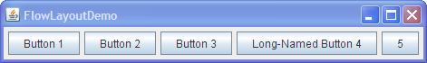
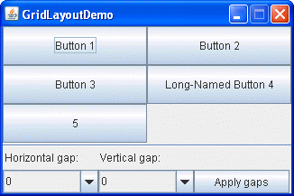
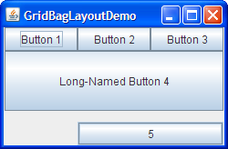
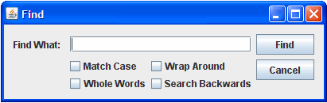

Java Swing
Bevezetés
Ebben a szekcióban megismerkedünk a Java Swing API-val. A Swing API grafikus komponensek egy bővíthető készlete, amelyek segítségével grafikus alkalmazásokat tudunk készíteni a Java nyelvben. A Swing a Java Foundation Classes (JFC) GUI-val foglalkozó része, ami egy szépen megtervezett függvénykönyvtár, bár még mindig valamennyire függ az a korábban használt AWT-től.
JFC
A JFC tehát a Java Foundation Classes rövidítése, ami egy csomó olyan olyan tulajdonságot foglal magában, amely segíti a grafikus felhasználói interfészek összerakását és a Java alkalmazások interaktivitását. Definíció szerint a JFC a következő elemeket tartalmazza:
| Tulajdonság | Leírás |
|---|---|
| Swing GUI komponensek | Mindent tartalmaz a nyomógomboktól kezdve a táblázatokig. |
| Külalak pluginek (lásd és érezd elemek) | A Swing alkalmazások pluginelhetőek úgy, hogy ezzel támogatjuk a look and feel elemek közötti választást. Például ugyanaz a program kinézhet "javasan", vagy "windowsosan". Ráadásul a Java platform támogatja a GTK+ look and feel elemeit, ami több száz ilyen kinézetet tesz elérhetővé a Swing programok számára. |
| Elérhetőség API | A fogyatékkal élő felhasználók számára olyan API-kat tesz elérhetővé, amelyek támogatják a Braille kijelzők használatát, vagy a képernyő felolvasást. |
| Java 2D API | A fejlesztők számára könnyen beolvaszthatóvá teszi nagy minőségű grafikákat, szövegeket és képeket az alkalmazásokba, vagy appletekbe. A Java 2D kiterjedt API-kat tartalmaz nagy minőségű kimenetek generálására és nyomtató eszközökre való továbbítására. |
| Internacionalizálás | A fejlesztők számára lehetővé teszik olyan applikációk fejlesztését, amelyeket mindenki a maga nyelve vagy kulturális konvenciói szerint használhat. Több ezer karakter segítségével a fejlesztők az olyan nyelveket is támogatni tudják az alkalmazásokban, mint a japán vagy a kínai. |
Swing felületek felépítése
A Swingben írt felületek valójában komponensek hierarchiái, amelyeket a legmagasabb szinten lévő komponensekbe,
konténerekbe helyezhetünk el. Minden Swing komponens konténer is egyben, amelybe újabb komponensek tehetők, de mivel
azok szintén konténerek, így újabb komponenseket rendelhetünk hozzájuk. A javax.swing.JComponent osztály a korábbi
grafikusfelület-programozási API egyik központi osztályának, a java.awt.Container-nek a leszármazottja.
A legmagasabb szinten lévő komponensek, az ablakok a hierarchiák gyökérelemei. Három olyan konténerosztály létezik,
amely egy gyökérelemet reprezentálhat: a JFrame, a JDialog és a JApplet, bár az utóbbi már nem támogatott.
Minden GUI komponens csak egy konténerben szerepelhet egyszerre: ha áthelyezzük egy másik konténerbe, akkor az előzőből automatikusan törlődik. Azonos típusú objektumokból több is szerepelhet egy konténerben.
Menüsort csak legfelső szinten lévő komponensekhez adhatunk. A menüsor a tartalompanelen kívül helyezkedik el.
Hello World swing program
import javax.swing.*;
public class HelloWorldSwing {
public static void main(String[] args) {
JFrame frame = new JFrame("HelloWorldSwing"); // (1)
frame.setDefaultCloseOperation(JFrame.EXIT_ON_CLOSE); // (2)
JLabel label = new JLabel("Hello World"); // (3)
frame.add(label); // (4)
//frame.getContentPane().add(label); // korabban
frame.pack(); // (5)
frame.setVisible(true); // (6)
}
}
- Létrehozunk
JFrameobjektumot, a konstruktorban kapott szöveg lesz az ablak fejléce. - A
setDefaultCloseOperationmetódus segítségével beállítjuk, mi történjen, ha megnyomjuk az ablakon az et.
et. - A programban definiálunk egy
JLabelkomponenst is ami egy egyszerű címke és a szövege "Hello world". - Ezt a címkét hozzá kell adnunk a frame-hez, hogy megjelenjen az ablakon.
- A
pack()metódusa egy akkora ablakot generál a frame-ünk számára, amiben elférnek a frame-re rakott elemek. - A
setVisible(true)metódussal tudjuk megjeleníteni az ablakot.
Swing komponensek
Minden Swing komponens a JComponent osztály leszármazottja, így örökli annak adattagjait és metódusait. A leszármazott
osztályok egyedi jellemzőin túl vannak olyan tulajdonságok, amelyekkel minden Swing komponensnek rendelkeznie kell. Ezek
a tulajdonságok a közös ősben, a JComponent osztályban találhatók, és hét területet ölelnek fel, amelyek a következők:
- A komponens megjelenítésének testreszabása (keret, előtér, háttér, betűk).
- A komponens állapotának lekérdezése és beállítása (engedélyezés, láthatóság, szerkeszthetőség).
- A Figyelő (Observer) és a Parancs (Command) tervezési mintát megvalósító eseménykezelők (különböző listener objektumok) hozzárendelése a komponenshez.
- A komponens megjelenítése (kirajzolása).
- Azon komponenshierarchia kezelése, amelynek a komponens a gyökéreleme.
- A tartalmazott komponensek elhelyezkedésének (layout) kezelése.
- Információk és beállítások a komponens méretével és pozíciójával kapcsolatban.
Ismerkedjünk meg néhány komponens típussal a Swingen belül.
Alapvető Swing komponensek
JFrame
Ez az osztály egy ablakot reprezentál, amely tartalmazhat más Swing komponenseket. Az alkalmazás főablaka általában egy JFrame.
- Létrehoz egy ablakot üres címmel.
- Létrehoz egy ablakot JFrame Example címmel.
JPanel
Egy olyan konténer, amely más Swing komponenseket tartalmazhat. A JPanel segít a felület elemek csoportosításában és elrendezésében.
- Létrehoz egy panelt.
JButton
Egy gomb, amelyet a felhasználó megnyomhat, hogy kiváltson egy eseményt vagy akciót.
JButton okBtn=new JButton(“Click”); // (1)
JButton homeBtn=new JButton(carIcon); // (2)
JButton homeBtn2=new JButton(carIcon, “Car”); // (3)
- Létrehoz egy gombot a Click felirattal.
- Létrehoz egy gombot a carIcon képpel.
- Létrehoz egy gombot a Click felirattal és carIcon képpel.
JLabel
Egy olyan címke vagy szöveges tartalom, amelyet a felhasználónak megjelenítünk. Szöveges vagy képi tartalomhoz használható.
- Létrehoz egy címkét a Sample text felirattal.
- Létrehoz egy címkét a carIcon képpel.
JTextField
A JTextField osztályt használjuk, ha szerkeszthető egysoros szövegbeviteli mezőt szeretnénk elhelyezni a felhasználói
felületen. Képes eseményt küldeni, ha a felhasználó ír valamit a mezőbe.
JTextField txtBox=new JTextField(50); // (1)
JTextField txtBox=new JTextField("Teszt"); // (2)
JTextField txtBox=new JTextField("Teszt",50); // (3)
- Létrehoz egy beviteli mezőt 50 oszlop szélességgel.
- Létrehoz egy beviteli mezőt Teszt szöveggel.
- Létrehoz egy beviteli mezőt Teszt szöveggel és 50 oszlop szélességgel.
JTextArea
Egy többsoros szövegbeviteli terület, amely hosszabb szöveges tartalmak megjelenítésére és szerkesztésére szolgál.
JTextArea txtBox=new JTextArea(50); // (1)
JTextArea txtBox=new JTextArea("Teszt"); // (2)
JTextArea txtBox=new JTextArea("Teszt",50); // (3)
- Létrehoz egy többsoros beviteli mezőt 50 oszlop szélességgel.
- Létrehoz egy többsoros beviteli mezőt Teszt szöveggel.
- Létrehoz egy többsoros beviteli mezőt Teszt szöveggel és 50 oszlop szélességgel.
JComboBox
Egy legördülő listát és egy kijelölt elemet tartalmazó komponens. Választólistákat hozhatunk létre vele.
String country[]={"India","Aus","U.S.A","England","Newzealand"}; // (1)
JComboBox cb=new JComboBox(country); // (2)
- Inicializál egy tömböt a legördülő lista lehetséges elemeinek.
- Létrehoz egy legördülő listát a
countrytömb elemeivel.
JCheckBox
Egy jelölőnégyzet, amely lehetővé teszi a felhasználónak egy vagy több opció kiválasztását vagy kikapcsolását.
JCheckBox checkBox=new JCheckBox(); // (1)
JCheckBox checkBox=new JCheckBox("Java"); // (2)
JCheckBox checkBox=new JCheckBox("Java",true); // (3)
- Létrehoz egy jelölőnégyzetet felirat nélkül.
- Létrehoz egy jelölőnégyzetet Java felirattal.
- Létrehoz egy jelölőnégyzetet Java felirattal és alapértelmezetten ki lesz jelölve.
JRadioButton
Egy olyan opcióválasztó gomb, amely közül csak egy lehet kiválasztva egy csoportban.
ButtonGroup buttonGroup=new ButtonGroup(); // (1)
JRadioButton jRadioButton_1=new JRadioButton(); // (2)
JRadioButton jRadioButton_2=new JRadioButton("Java"); // (3)
buttonGroup.add(jRadioButton_1) // (4)
buttonGroup.add(jRadioButton_2)
- Létrehoz egy gomb csoportot a opcióválasztó gombjaink számára
- Létrehoz egy opcióválasztó gombot felirat nélkül.
- Létrehoz egy opcióválasztó gombot Java felirattal.
- Ahhoz, hogy egyszerre csak egy gomb lehessen kiválasztva hozzá kell adnunk a gombokat a csoporthoz.
JList
Egy lista, amelyben elemeket lehet megjeleníteni és kiválasztani.
DefaultListModel<String> l1=new DefaultListModel<>(); // (1)
l1.addElement("Item1"); // (2)
l1.addElement("Item2");
l1.addElement("Item3");
l1.addElement("Item4");
JList<String> list=new JList<>(l1); // (3)
- Létrehoz egy lista modelt a lista elemeinek.
- A lista modelhez hozzá adjuk a lista elemeit.
- Létrehozzuk a listát, a lista model felhasználásával.
JTable
Egy táblázat, amelyben elemeket lehet megjeleníteni és kiválasztani.
String data[][]={{"101","Amit","670000"},{"102","Jai","780000"},{"101","Sachin","700000"}}; // (1)
String column[]={"ID","NAME","SALARY"}; // (2)
JTable jt=new JTable(data,column); // (3)
- Létrehoz egy kétdimenziós tömböt a táblázat adataival.
- Létrehoz egy tömböt a táblázat oszlopneveinek.
- Létrehozzuk a táblázatot az adatok és oszlopnevek felhasználásával.
Eseménykezelés
A GUI használhatóságának egyik alapja, hogy az egyes komponensek különböző eseményeket tudnak kiváltani, amelyek hatására majd "történik valami", azaz valami aktiválódik, esetleg megnyílik, vagy bezárul egy ablak, stb.
Minden eseményt, illetve az esemény beköveztét figyelheti egy, vagy több hallgató (a továbbiakban maradjunk inkább a listener elnevezésnél), amely listenerek reagálhatnak arra, hogy az esemény bekövetkezett.
A listenerek olyan speciális osztályok, amelyek értelemszerűen megvalósítanak valamilyen Listener interface-t. A
listener objektumokat az adott komponensnél be kell jegyezzük, ehhez minden komponensnek vannak különböző add
metódusai,
amelyek az esemény típusától függnek, amihez hozzá akarjuk rendelni a listenert.
Minden esemény egy objektum, amely információkat tartalmaz az eseményről és az esemény forrásobjektumáról. Az események forrása legtöbbször komponens vagy modell, de bármely objektumtípus funkcionálhat eseményforrásként.
Mivel minden Swing komponens az AWT Compoment osztályból származik, ezért mindegyikük támogatja az alábbi
alacsonyszintű listenerek:
component listener- A komponens méret- pozíció- vagy láthatóság változását figyeli.focus listener- Figyeli, hogy a kompomens fókuszba kerül, vagy kikerül a fókuszból.key listener- A gomb lenyomásokat figyeli, csak akkor tüzel, ha a kompomens fókuszban van.mouse listener- Az egér kattintásokat, lenyomásokat figyeli, továbbá ha az egér mozgását a komponensen.mouse-motion listener- Az egér pozícióját figyeli a komponensen belül.mouse-wheel listener- Az egér görgőt figyeli a komponensen.
Lehetőségünk van magasabb szintű semantikus eseményekre is feliratkozni. A szemantikus eseményeket felhasználói bemenet váltja ki: például a felhasználó rákattint egy gombra. Jellemző, hogy egy szemantikus esemény mögött alacsony szintű események egész sorozata húzódik meg: egy gombnyomáshoz, mint szemantikus eseményhez az egérkurzor pozícionálására, az egérgomb lenyomására és felengedésére is szükség van (ezek mind alacsony szintű műveletek). Ráadásul ugyanazt a szemantikus eseményt több alacsony szintű eseménysorozattal is elérhetjük, hiszen a gombnyomás szemantikus esemény pusztán a billentyűzet segítségével is kiváltható: a Tab billentyűvel kiválasztva a gombot a Space illetve az Enter billentyű lenyomásával.
A szemantikus eseményeket négy osztály reprezentálja:
ActionEvent- amely ezek közül a leggyakoribb, gombnyomáskor, menüválasztáskor, listaelem-kiválasztáskor, illetve a szövegmezőn Enter leütésekor keletkezik ilyen esemény.AdjustmentEvent- amely egy görgetősáv (scroll bar) használata során következik be.ItemEvent- akkor áll elő, ha a felhasználó jelölőnégyzetek segítségével vagy listaelemekből kiválaszt valamit.TextEvent- akkor jön létre, ha egy szövegmező vagy szövegterület tartalma megváltozik.
Ha csak lehet, a szemantikus eseményekre kell feliratkoznunk, nem pedig az alacsony szintűekre. Ennek több előnye is van: egyrészt így tudjuk a kódunkat a leginkább hordozhatóvá és robusztussá tenni, másrészt pedig így akkor is értesülünk egy eseményről (például egy nyomógombra kattintásról), ha azt nem az elvárt módon végezték. Egy nyomógomb megnyomását például csak egérrel érhetjük el, hanem a billentyűzettel is. Ha ekkor a szemantikus esemény helyett csupán arra iratkoztunk volna fel, hogy egy adott területen (ahol a gomb van) történik-e kattintás és felengedés egérgomb segítségével, akkor a billentyűzet segítségével végzett „gombnyomásról” bizony lemaradnánk.
A következő táblázat a komponensek és a hozzájuk rendelhető figyelő objektumok típusát tartalmazza:
| Komponens | ActionListener | CaretListener | ChangeListener | DocumentListener,UndoableEditListener | ItemListener | ListSelectionListener | WindowListener |
|---|---|---|---|---|---|---|---|
| button |  |
|
|
||||
| check box | |
|
|
||||
| color chooser | |
||||||
| combo box | |
|
|||||
| dialog | |
||||||
| file chooser | |
||||||
| frame | |
||||||
| list | |
||||||
| password field | |
|
|
||||
| radio button | |
|
|
||||
| table | |
||||||
| text area | |
|
|||||
| text field | |
|
|
Gomb eseménykezelése
public class SwingApplication {
public static void main(String[] args) {
JFrame frame = new JFrame("SwingApplication"); // (1)
frame.setDefaultCloseOperation(JFrame.EXIT_ON_CLOSE); // (2)
JPanel panel = new JPanel(); // (3)
JButton button = new JButton("Swing button"); // (4)
button.addActionListener(new ActionListener() { // (5)
@Override
public void actionPerformed(ActionEvent e) { // (6)
System.out.println("Hello World!"); // (7)
}
});
panel.add(button); // (8)
frame.add(panel); // (9)
frame.pack(); // (10)
frame.setVisible(true); // (11)
}
}
- Létrehozunk
JFrameobjektumot, a konstruktorban kapott szöveg lesz az ablak fejléce. - A
setDefaultCloseOperationmetódus segítségével beállítjuk, mi történjen, ha megnyomjuk az ablakon az et. - Létrehozunk egy
JPanelobjektumot, amin a gombot szeretnénk majd elhelyezni. - Létrehozunk egy
JButtonobjektumot, a Swing button felirattal. - A
JButtonobjektumhoz hozzáadunk egyActionListenerobjektumot, ami a gombnyomást fogja kezelni. - A gomb megnyomása esetén az
ActionListenerobjektumunkactionPerformedmetódusa fog meghívódni. - Az
actionPerformedmetódusban kiírjuk a konzolra a Hello World! szöveget. - A panelhez hozzáadjuk a gombot.
- Az
actionPerformedmetódusban kiírjuk a konzolra a Hello World! szöveget. - Az
actionPerformedmetódusban kiírjuk a konzolra a Hello World! szöveget. - Az
actionPerformedmetódusban kiírjuk a konzolra a Hello World! szöveget.
Elrendezéskezelők (Layout menedzserek)
Egy elrendezéskezelő vagy elhelyezéskezelő a LayoutManager interfészt implementáló objektum, amely a komponensek
méretét és pozícióját határozza meg egy tárolón belül.A Swing komponensek alapértelmezett elrendezéskezelővel
rendelkeznek, amely például panelek esetében a FlowLayout, míg tartalompaneleknél a BorderLayout. Az alapértelmezett
elrendezéskezelők leválthatók, erre azonban legtöbbször nincs szükség.
Amennyiben nem használunk elhelyezéskezelőt, abszolút pozícionálást kell végeznünk, amely értelmében minden komponensnek explicit módon kell megadnunk a méretét és a pozícióját a tárolón belül. Ezek az értékek rögzítettek, amelyek például az ablak átméretezésekor sem frissülnek. Éppen ezért ez kerülendő.
Border Layout
A BorderLayout a tartalompanelek (content pane) alapértelmezett elrendezéskezelője, így az összes legfelső szintű
konténerben (ablakkeretben, dialógusablakban és appletben) ezt használhatjuk alapból. A rendelkezésre álló területet öt
részre osztja fel: felső, alsó, jobb oldali, bal oldali és középső, ahogyan az az ábrán is látható.

Box Layout
A BoxLayout a komponenseket egy sorba vagy egy oszlopba helyezi, figyelembe véve a komponens által igényelt maximális
méretet.

Card Layout
A CardLayout segítségével olyan felület valósítható meg, ahol a különböző időpontokban különféle komponensek jelennek
meg. Tulajdonképpen fülek segítségével elért lapokként gondolhatnuk rá, ahol sokszor tényleges fülek helyett egy
combobox segítségével válthatunk az egyes lapok között.

Flow Layout
A FlowLayout a JPanel-ek alapértelmezett elrendezéskezelője, sorfolytonosan tölti ki a rendelkezésre álló teret. Ha
egy sorban már nincs elegendő helye egy elhelyezendő komponens számára, akkor új sort kezd.

Grid Layout
A GridLayout a komponensek számára azonos méretet határoz meg egy n×m-es rácshálóban.

GridBag Layout
A GridBagLayout nagyon fejlett és rugalmas elrendezéskezelő, a GridLayout továbbfejlesztéseknét jött létre. A
komponenseket szintén egy rácsháló alapján helyezi el, de megengedi, hogy egy-egy komponens több sort, illetve oszlopot
is elfoglaljon. A rácsháló egyes sorai akár eltérő magasságúak, oszlopai pedig akár eltérő szélességűek is lehetnek.
Nagyfokú rugalmassága mellett az egyik legnehezebben használható elrendezéskezelő is egyben.

Group Layout
A GroupLayout a grafikus felhasználói felületet drag-and-drop módszerrel öszeállító integrált fejlesztői
keretrendszerek számára jött létre. Külön-külön foglalkozik a vízszintes és a függőleges elrendezéssel, vagyis minden
komponens helyét kétszer kell definiálni: egyszer vízszintesen, egyszer pedig függőlegesen kell elhelyezni.
